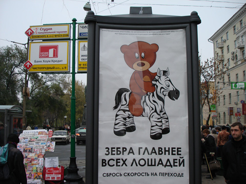
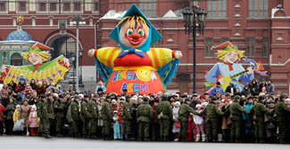
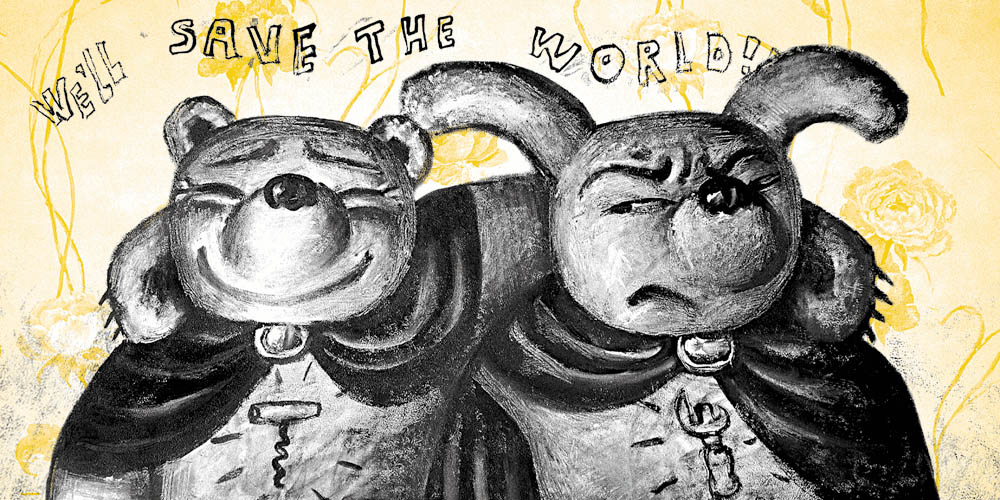

SAVE THE WORLD
Я собирался эту колонку написать два года назад, потом год назад, потом, разбирая черновики решил (понадеялся), что тема устарела.
Но нет, наступила весна и вот она опять тут как тут, а где-то, может быть, ее и вовсе не снимали.
(фото с сайта drive.ru, где по этому поводу тоже переживают )

Это еще не предел цинизма – здесь хотя бы пририсовали зебру (я молчу про то, что у нее коленки выгибаются вперед, как у человека). Есть ведь еще и зайка, нарисованный буквально из тех же двух-трех кружочков (кстати, не генетическая ли связь с зайкой довела мишку до такого сурового косоглазия). Вместе с мишкой они уже который год (кто-нибудь вспомнит точно, который?) зовут соблюдать правила дорожного движения, усыновлять детей, уважать старших и кажется, даже не курить.
Я позволю себе не вникать в налоговые бонусы или чем там рекламодателей стимулируют покупать площади под спонсорскую социальную рекламу вместо обычной. Не мое дело, да и пусть их – в общем-то ничего плохого в этой всей истории нет, ну зайка, ну мишка, может, и правда кто-нибудь кого-нибудь усыновит, ну, или хотя бы пропустит на зебре (что тоже сомнительно), а заодно отнесет денег в соответствующую страховую компанию. В конце концов, мишки ведь и правда умиляют большую часть публики (об этом подробнее в следующий раз).
Другое дело мы, да? Хочется разговаривать об иллюстрации в подробностях, смаковать детали, обсуждать тенденции и взаимные влияния. Хочется видеть вокруг местных Шонов Тэнов, Дэнов Джеймсов, Дэвидов Шригли, наконец. Вместо этого вот она, современная российская иллюстрация.
Вопрос о том, как стать классным иллюстратором и вопрос о том, как иллюстратору заработать себе на жизнь – это два совершенно разных вопроса. Из известных мне классных иллюстраторов (иными словами, в объединении "Цех"), может быть, одна Маша Краснова-Шабаева (поправьте, если еще кто) зарабатывает непосредственно иллюстрацией, остальные кто как – в большинстве сидят где-нибудь дизайнерами. Можно иногда вписаться в дорогой рекламный проект, но по нынешним временам все чаще предлагают поработать бесплатно, "на портфолио". И работаем, ничего.
Но есть способ. Лучший совет, который я могу вам дать, вот: родитесь дочкой какого-нибудь большого начальника. Или женитесь на чьей-нибудь дочке (тут, правда, есть известные подводные камни). Другого способа получить заказ на векторного мишку, который будет потом висеть годами по всей стране, наверняка нет. Как нет в мире справедливости.
Но главный вопрос на самом деле в том, который из перечисленных выше вопросов, собственно, ставить.
Я обычно не вешаю того, на что мне не хочется смотреть, но сейчас не в том вопрос – хочется или нет. Есть такое слово, надо. Смотрите сюда, коллеги:
К сожалению, не помню, откуда взял картинку. Кто знает автора или владельца, дайте знать, подпишем.

Когда-нибудь, когда-нибудь вот этого не будет вообще. Мы его вытесним просто. Не в том дело, что мы лучше (не так стоит вопрос). Просто мы каким-то таинственным образом сплотимся, умножимся и вытесним это тупо числом. Поэтому все, то есть буквально все, что вы делаете, за деньги ли, за идею или для себя, нужно и важно.
Влад Васильев
